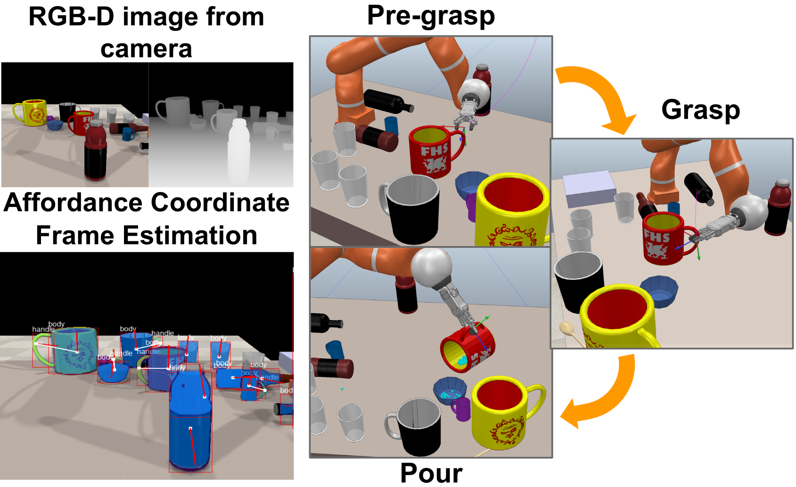
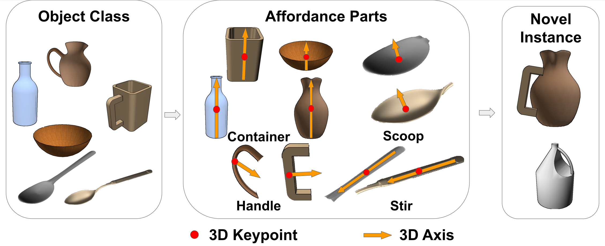

Manipulation-Oriented Object Perception in Clutter through Affordance Coordinate Frames
University of Michigan, Ann Arbor
University of Michigan, Ann Arbor
University of Michigan, Ann Arbor
University of Michigan, Ann Arbor
University of Michigan, Ann Arbor
University of Michigan, Ann Arbor
University of Michigan, Ann Arbor
University of Michigan, Ann Arbor

In order to enable robust operation in unstruc-
tured environments, robots should be able to generalize manipulation actions to novel object instances. For example, to
pour and serve a drink, a robot should be able to recognize
novel containers which afford the task. Most importantly,
robots should be able to manipulate these novel containers
to fulfill the task. To achieve this, we aim to provide robust
and generalized perception of object affordances and their
associated manipulation poses for reliable manipulation. In this
work, we combine the notions of affordance and category-
level pose, and introduce the Affordance Coordinate Frame
(ACF). With ACF, we represent each object class in terms
of individual affordance parts and the compatibility between
them, where each part is associated with a part category-
level pose for robot manipulation. In our experiments, we
demonstrate that ACF outperforms state-of-the-art methods
for object detection, as well as category-level pose estimation
for object parts. We further demonstrate the applicability of
ACF to robot manipulation tasks through experiments in both
simulation and real world environment.
Concept of Affordance Coordinate Frame (ACF)
We chose a combination of one 3D keypoint plus one 3D axis associated to an object part geometry to be the Affordance Coordinate Frame, to balance its generalizability across different instances, ability to be directly used in robot manipulation, and visual perceivability.

Robot Experiment on Pouring and Stirring
We used the Fetch robot to manipulation spalutas and containers to execute pour and stir actions directly from the perceived ACFs on the object parts (to calculate motion keypoints and constraints during the actions).

@inproceedings{chen2022manipulation,
title={Manipulation-Oriented Object Perception in Clutter through Affordance Coordinate Frames},
author={Chen, Xiaotong and Zheng, Kaizhi and Zeng, Zhen and Basu, Shreshtha and Cooney, James and Pavlasek, Jana and Jenkins, Odest Chadwicke},
booktitle={International Conference on Humanoid Robots (Humanoids)},
year={2022},
url={https://arxiv.org/pdf/2010.08202}
}